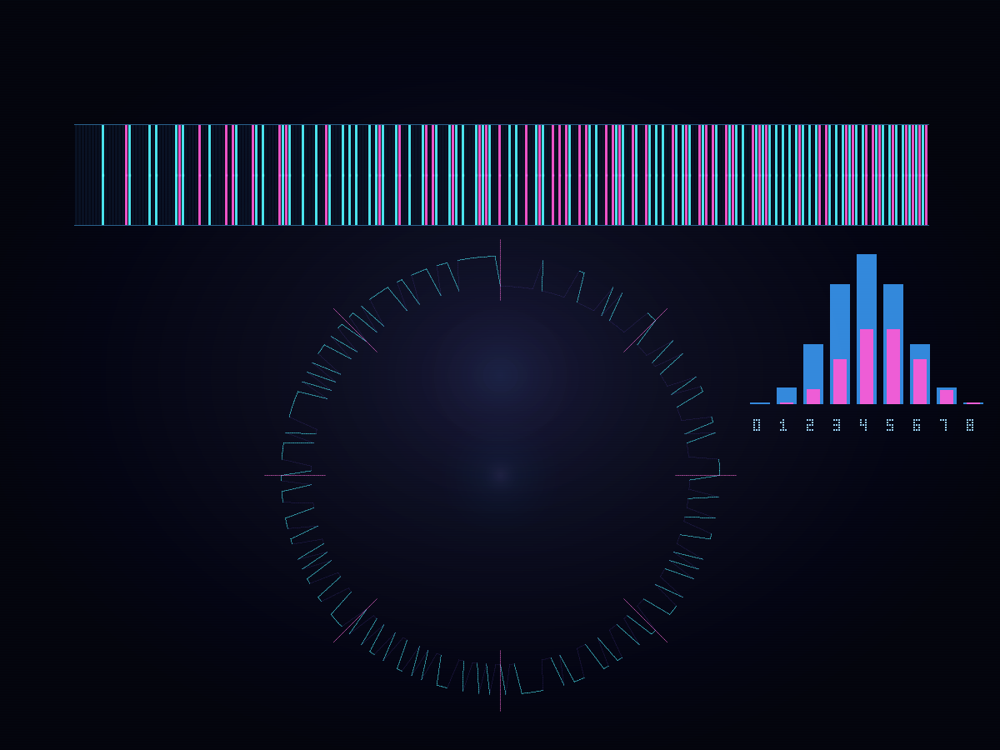

// 假设HYPOTHESIS
如果把二进制序列做成一个环，能不能用最短仅 256 位的长度，让全部 256 种 8 位组合都恰好出现一次？换句话说，能否造出一把理论上的「万能试码钥匙」，沿着环滑一圈就把所有 8 位窗口试完？
If we treat a binary sequence as a ring, can the absolute minimum length of 256 bits contain every possible 8-bit combination exactly once? In other words, can we build a theoretical universal lockpick that tests all 8-bit windows by sliding around the loop once?
// 方法METHOD
用经典 de Bruijn 递归算法生成二进制 B(2,8) 序列，得到长度恰好 2^8=256 的环串。随后把环串首尾相接补齐前 7 位，逐窗扫描验证全部 8 位模式是否各出现一次；再统计 0/1 数量、抽样展示前 12 个窗口。最后用纯 Python 手写 PNG 编码器渲染一张赛博风图：上方把 256 位拉直成条码，下方把同一序列卷成环形轨道，亮色表示 1、暗色表示 0，并附一个按汉明重量分组的小柱图。零外部依赖。
Generate the binary de Bruijn sequence B(2,8) with the classic recursive algorithm, yielding a ring of exactly 2^8 = 256 bits. Then append the first 7 bits to the end, scan every sliding window, and verify that all 256 possible 8-bit patterns appear exactly once. Also count zeros and ones, and sample the first 12 windows. Finally render a cyberpunk PNG with a pure-Python hand-rolled encoder: the top shows the 256 bits as a flat barcode, the bottom wraps the same sequence into a circular track, with bright strokes for 1 and dark strokes for 0, plus a small histogram grouped by Hamming weight. Zero external dependencies.
// 结果RESULT
成功 ✅ — 真实跑完后，这把“万能钥匙”果然成立：序列长度正好 256 位，扫描得到 256 个不同的 8 位窗口，和理论上全部可能组合完全一致，一个不多、一个不少。更妙的是 0 和 1 也刚好各 128 个，环串在信息量上极度均衡。前 12 个窗口从 00000000、00000001、00000010 一路滑到 00001100，像在按某种神秘秩序遍历整个密码宇宙。最后生成的 PNG 同时展示了“拉直看像条码、卷起来像轨道”的双重形态：一圈滑完，就把所有 8 位密码都试过了。最短、最全、还挺优雅，这就是组合数学版的黑科技。
SUCCESS ✅ — The universal key worked exactly as promised: the sequence length is precisely 256 bits, and scanning it produced 256 distinct 8-bit windows, matching the full theoretical set with perfect completeness. Even better, the ring is perfectly balanced too: exactly 128 zeros and 128 ones. The first 12 windows slide from 00000000 and 00000001 through 00001100, as if traversing the entire password universe in a hidden order. The final PNG shows the same object in two forms at once — a flat barcode above and a circular track below. Go around the loop once, and you have tested every 8-bit password exactly once. Minimal, complete, and weirdly elegant: this is combinatorics as terminal black magic.
// 产出ARTIFACT

🔍 点击放大Click to enlarge
← 返回实验列表BACK TO EXPERIMENTS